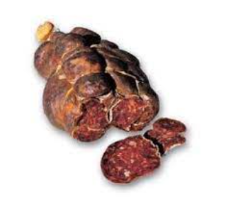
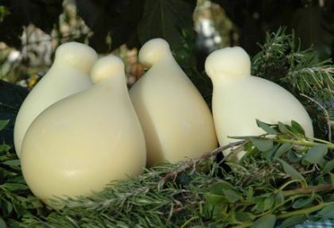
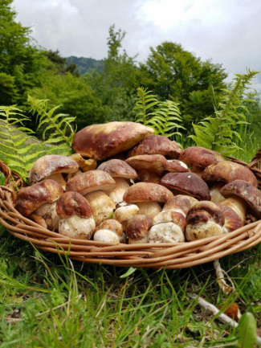

| Home Il locale La nostra storia I nostri prodotti Foto Menù Contatti | ||||||||
I nostri prodottiNoi del Tulipano dedichiamo impegno, cura e attenzione, all’uso di alimenti tipici e di produzione locale. L’impiego nella panificazione di semola rimacinata di grano duro, produce effetti di straordinaria qualità nell’area delle Madonie; praticamente in tutti i paesi ci sono ancora forni dove si cuociono a legna pagnotte lievitate con i “criscenti”, la pasta madre che un tempo nelle case, si tramandava di madre in figlia e ci si prestava tra vicini. Il quadro gastronomico dell’area comprende ancora, oltre a piccole quantità di olio extravergine e di vino, il fungo porcino e la provola madonita. Procuriamo le nostre carni e salumi dalla antica Macelleria Rurale Mario Puccia, produttrice del salame tradizionale pappone o buffa di Castelbuono Siamo orgogliosi dei nostri prodotti e di sostenere la piccola produzione agricola del territorio, di coltivare con passione le nostre tradizioni. | ||||||||
|
|
||||||||
|  |  |  | ||||||
|
|
||||||||
| Indirizzo: C/da dei Tulipani n°10, Castelbuono (PA) |
Copyright © | |||||||